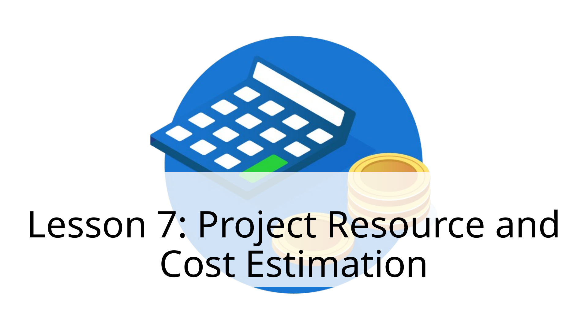
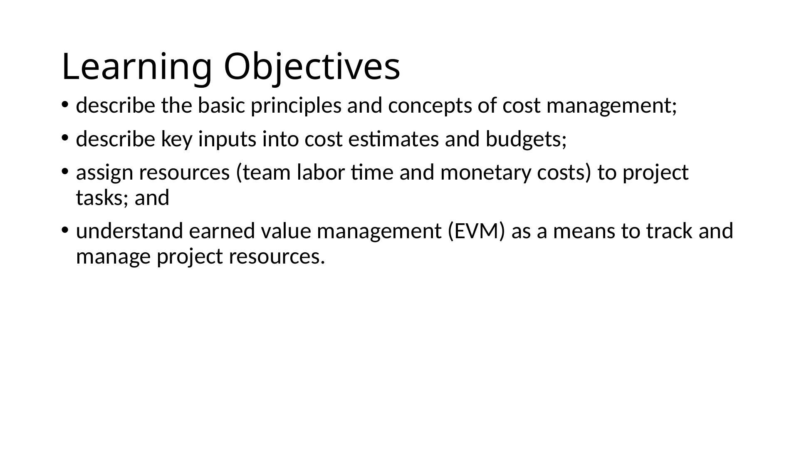
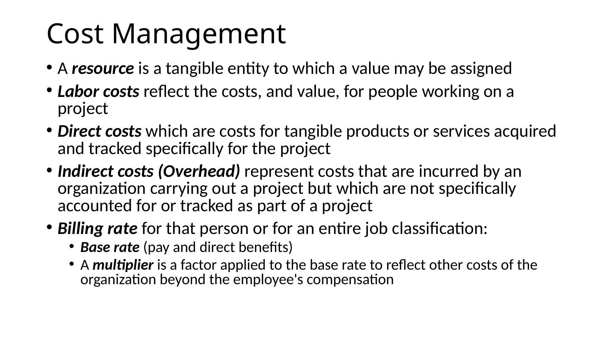
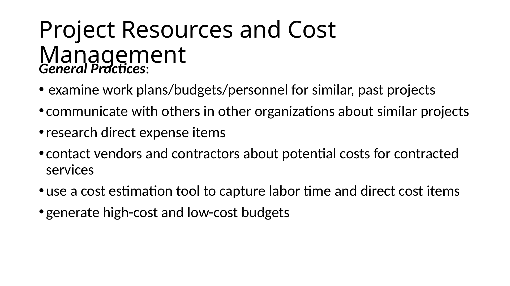
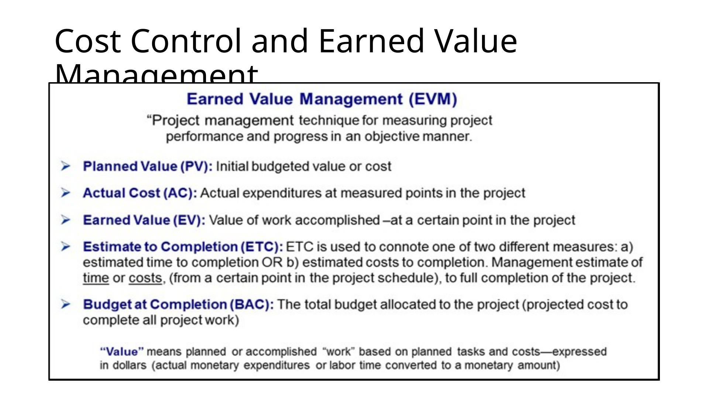
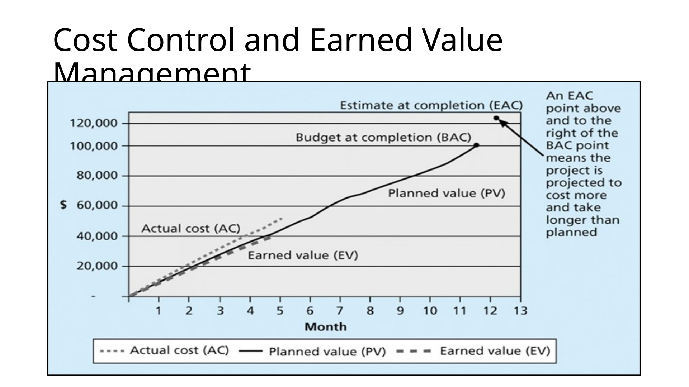
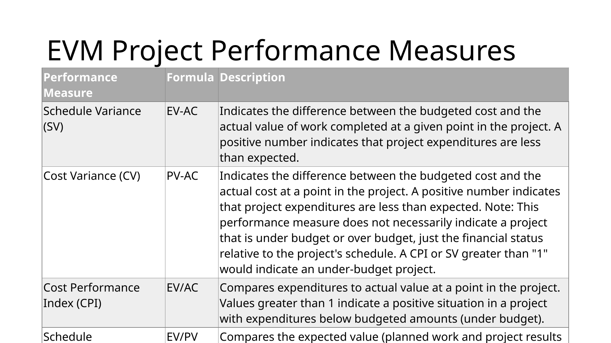

Slide text
Speaker notes / extracted notes
Show slide thumbnails

1. Lesson 7: Project Resource and Cost Estimatio
2. Learning Objectives
3. Cost Management
4. Project Resources and Cost Management
5. Cost Control and Earned Value Management
6. Cost Control and Earned Value Management
7. EVM Project Performance Measures